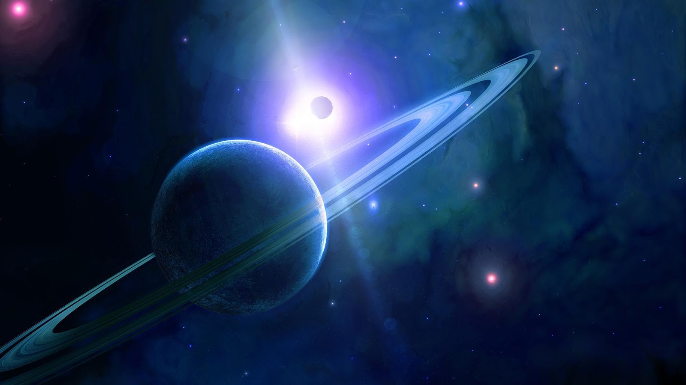
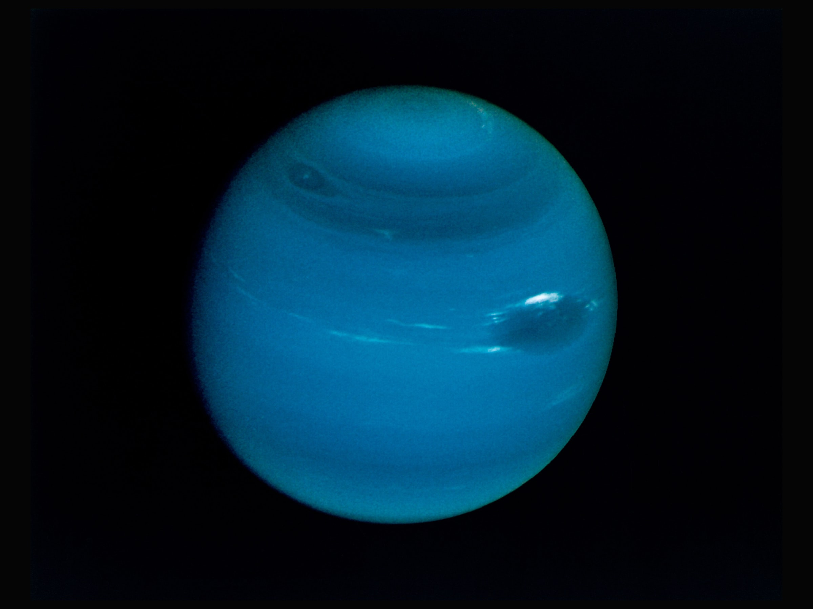
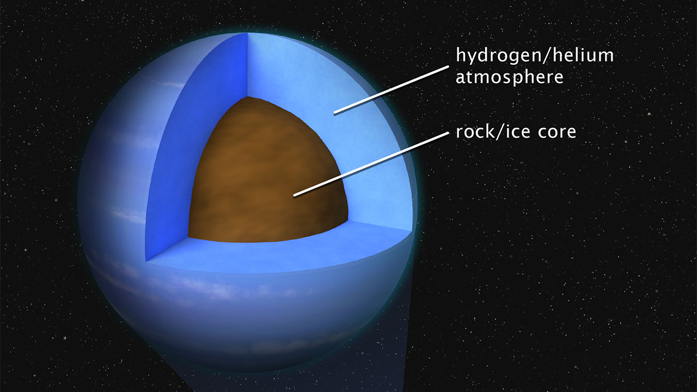

Neptun er den åttende og ytterste av planetene i solsystemet, og den
fjerde største. Den er i likhet med Jupiter, Saturn og Uranus en
gassplanet, nærmere bestemt en iskjempe. Neptun er den eneste planeten
i solsystemet som ikke er synlig med det blotte øyet, men synes i
teleskop som en liten, blå skive. Den ble oppdaget i 1846. Neptun har
et svakt ringsystem og 14 kjente måner, hvor Triton er den største.
Bane og rotasjon
Neptun bruker 165 år på å fullføre et baneomløp rundt Sola. Neptuns
gjennomsnittlige avstand fra Sola er 4,5 milliarder kilometer, som
er 30 ganger Jordas avstand. Noen ganger befinner Neptun seg lenger
ut i solsystemet enn dvergplaneten Pluto, som vanligvis er lenger
ut. Det skyldes at Pluto går i en meget langstrakt bane, og denne
banen krysser dermed Neptuns bane. Dette skjer hvert 248. jordår og
Pluto befinner seg da innenfor Neptuns bane i 20 år om gangen. Sist
dette skjedde var i årene 1979–1999.

Oppbygning
Neptun har en omkrets rundt ekvator på 154 704 kilometer, nesten
fire ganger større enn Jorda. Neptun har en masse som er 17 ganger
Jordas masse. Vår begrensede kjennskap til Neptuns indre er basert
på beregninger på grunnlag av målinger av atmosfærens sammensetning
og planetens størrelse, form, rotasjon, masse og gravitasjonsfelt.
Neptun antas å ha en liten kjerne av silikater omgitt av en blanding
av silikater og vannis, og hydrogen og helium lengst ute.
Atmosfære og magnetfelt
Neptuns atmosfære består hovedsakelig av hydrogen og helium, samt
litt metan, som er årsaken til planetens karakteristiske, dype
blåfarge. Romsonden Voyager 2 avbildet i 1989 en stor, svart flekk,
kalt Den store mørke flekken, som er en merkelig parallell til
Jupiters store røde flekk, både når det gjelder størrelsen i forhold
til planeten og lokaliseringen på den sørlige halvkule. Flekken, som
var en enorm storm, større enn Jorda i utstrekning, har forsvunnet
siden den ble oppdaget. I ettertid har nye flekker dukket opp andre
steder på planeten.


Måner og ringer
Neptun har 14 kjente måner, hvor Triton er den største. Triton er
den eneste store månen i solsystemet som beveger seg i motsatt
retning av sin planets rotasjon (retrograd bevegelse). Triton ser ut
til å ha et frossent, øde landskap på den nordlige halvkule og
aktive geysirer i sydpolområdet.